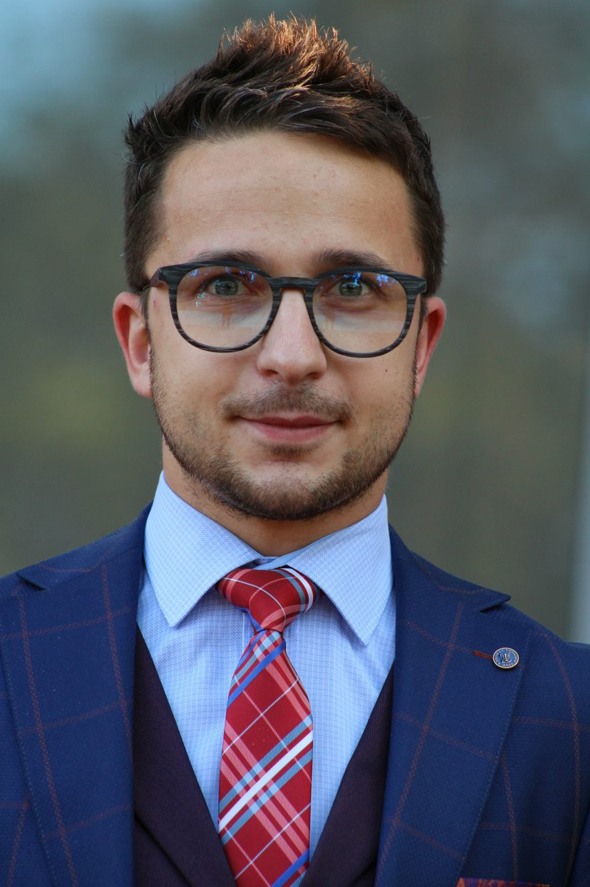

Юрій Григоренко
Юрист-правозахисник, антикорупціонер і громадський активіст, засновник гільдії, представник української адвокатури на міжнародному рівні.

з 2015 року
Досвід і позиція
Понад 15 років захищає права людей і викриває свавілля посадовців. Юрист-правозахисник і антикорупціонер, який представляє українську адвокатуру на міжнародному рівні. Заснував гільдію, щоб правозахисники Півдня мали спільний голос.
Шлях правозахисника
- Помічник-консультант депутата Одеської міської ради
Постійна комісія з питань законності та правопорядку — перший досвід роботи з місцевою владою.
- Засновник і голова Південної правозахисної гільдії
Об’єднав правозахисників Півдня для громадського контролю судів і захисту прав людини.
- Адвокат, арбітражний керуючий
Власна практика: господарські, цивільні й кримінальні справи, банкрутство.
- Комітет захисту прав адвокатів НААУ
Член, секретар, заступник голови. Робота з ООН, Міжнародною комісією юристів, IBA та CCBE.
- Адвокатське бюро «Літіґент» · представник НААУ в Молдові
Керуючий бюро. Закордонний представник Національної асоціації адвокатів України.
- Заступник голови комітету НААУ з експертного забезпечення
Стандарти взаємодії адвокатів із судовими експертами, навчання адвокатів.
- Аспірантура НУ «Одеська юридична академія»
Дослідження взаємодії адвокатів із суб’єктами судово-експертної діяльності.